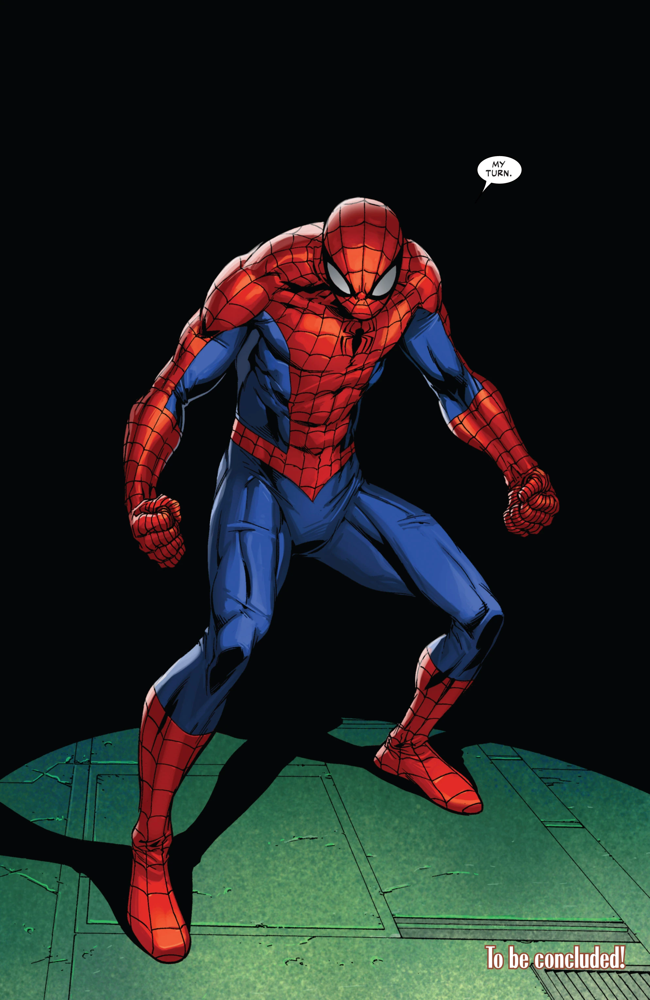
Peter Parker
The original Spider-Man and protector of New York City.
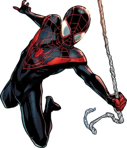
Miles Morales
Brooklyn's Spider-Man with Venom Blast and camouflage abilities.
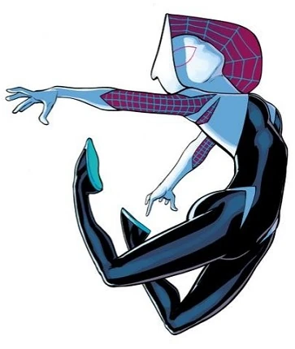
Spider-Gwen
Gwen Stacy became Spider-Woman in her own universe.
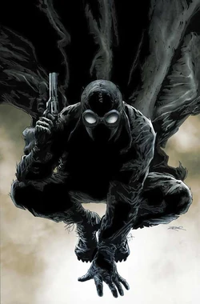
Spider-Man Noir
A detective-style Spider-Man from the dark 1930s universe.
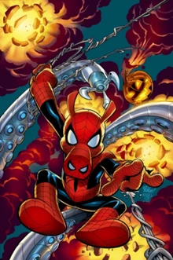
Spider-Ham
The hilarious cartoon hero known as Peter Porker.
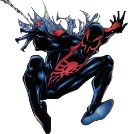
Spider-Man 2099
Miguel O'Hara, the futuristic Spider-Man from the year 2099.
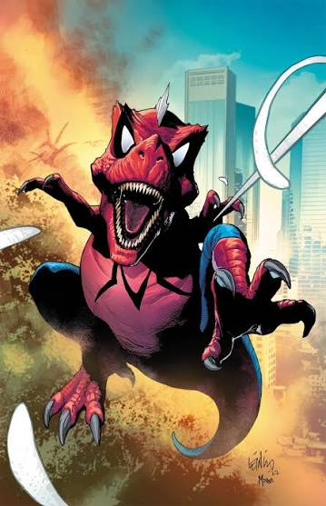
Spider-Rex
Spider-Rex is a Tyrannosaurus Rex from another universe who gained spider powers after being bitten by a prehistoric spider. He combines incredible strength with agility to protect the Spider-Verse.
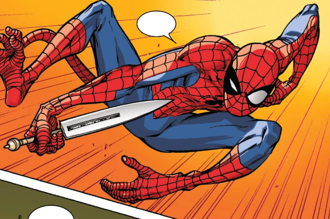
Spider-Monkey
Spider-Monkey is a primate hero with amazing climbing abilities, lightning-fast reflexes, and the powers of a spider. He swings through the jungle to defend his home from danger.
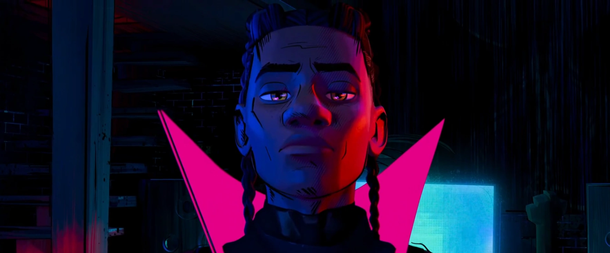
Miles G. Morales
Miles G. Morales comes from Earth-42, a universe where there is no Spider-Man. Instead of becoming a hero, he grows up as the mysterious Prowler, using advanced technology and stealth while protecting those closest to him.
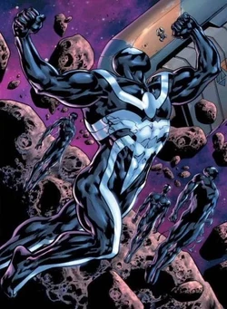
Venom
Venom is a symbiote host with enhanced strength, speed, and durability. He has a complex relationship with Spider-Man, often serving as both an enemy and an ally.
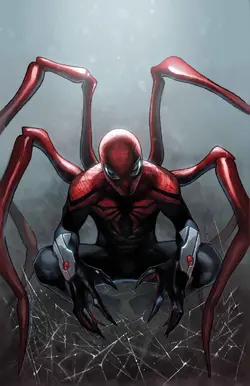
Superior Spider-Man
Doctor Otto Octavius (of Earth-616), better known as Doctor Octopus or Doc Ock, was one of Spider-Man's greatest enemies and one of the iconic comic book characters in the world.

Agent Anti-Venom
Flash Thompson was Peter Parker's school bully.After losing his legs in the Iraq War, he bonded with the Venom Symbiote.and fought to protect people.
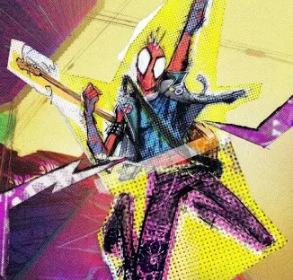
Spider-Punk
Spider-Punk is a version of Spider-Man from a possible future featuring a punk rock aesthetic and advanced technology.